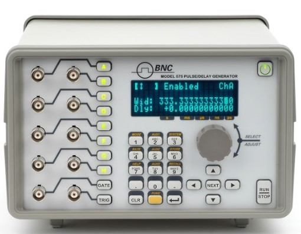
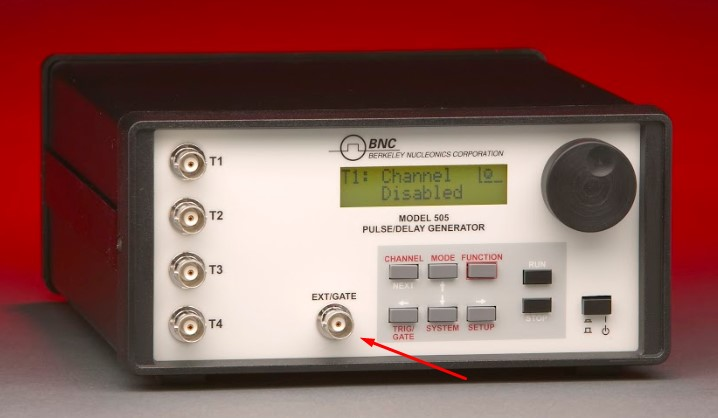
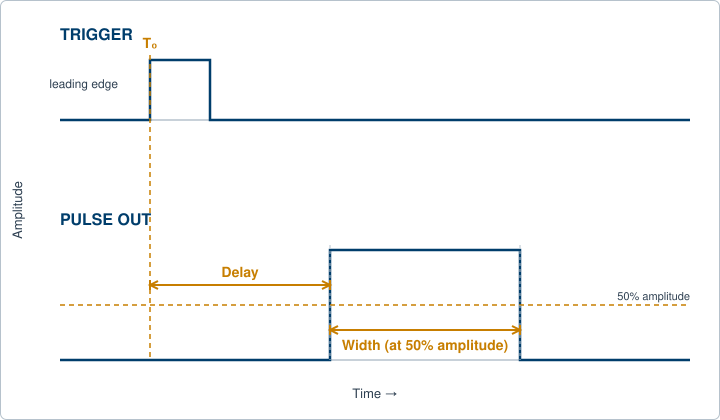
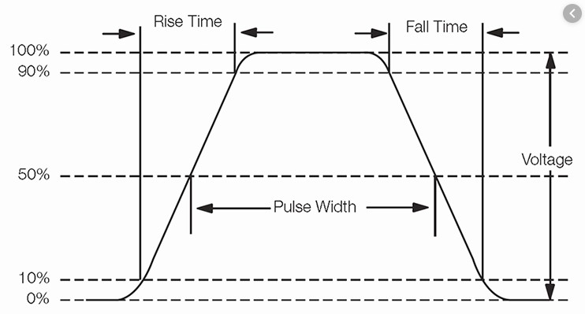
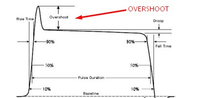
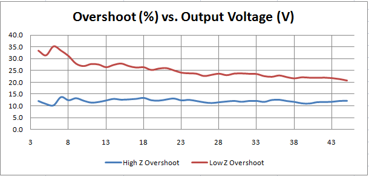

A timing signal looks simple from the outside. An instrument puts out a pulse, then another, on a schedule you set. The depth lives in the details: how each edge is shaped, when a pulse fires relative to a trigger, how finely you can dial a width, and how faithfully the hardware honors the number on the screen. This book works through those details across eight chapters. This first chapter lays the foundation by defining the core vocabulary that the rest of the book reuses. Later chapters build on it: pulse shape and signal integrity (Chapter 2), gating, delaying, and clocking (Chapter 3), running a multi-channel system (Chapter 4), coordinating many signals and avoiding overlap (Chapter 5), real applications from laser timing to ranging (Chapter 6), communications and storage (Chapter 7), and where precision timing is heading next (Chapter 8). Start here, and every term that follows will already be familiar.
Pulse and delay generators cover a wide range of products, from small OEM modules to benchtop instruments to timing circuits built directly into a larger design. This chapter focuses on bench instruments, because they gather most of the terminology associated with timing into one place. Berkeley Nucleonics builds across that range, from the portable Model 525 to the bench Model 575 and 577, the rack-mount 588 family, and the femtosecond-class 745T. The vocabulary is the same whatever the form factor.
Bench pulsers are test equipment. They typically let you control the pulse repetition rate, the pulse width, the pulse delay from an internal or external trigger, and the pulse amplitude. Advanced instruments add rise time and fall time adjustments as well. Outputs are usually TTL electrical signals with adjustable amplitudes in volts. Some instruments also provide optical outputs that mimic the properties of the electrical output. The Model 575, for example, offers both optical and electrical I/O.

A timing instrument needs a trigger source from which to generate pulses. That source is typically an internal clock running at a set rate. The instrument then behaves as a free-running source, firing on its own schedule. When an application requires it, the instrument may provide a Clock-In port that lets it synchronize to an external clock instead. This matters whenever several instruments have to share one sense of time, or when the pulser has to follow a system reference rather than lead with its own.

The repetition rate, also called the pulse repetition frequency, is simply how often the cycle repeats: pulses per second. The period is its reciprocal. You can set either the rate or the period, whichever is natural for the task. Chapter 3 returns to clocks in depth, including the 10 MHz reference, phase-locked loops, and upgraded time bases. For now, the rate is the metronome, and the trigger is the downbeat that starts each cycle.
Resolution is the finest setting step available for an instrument's timing properties. An instrument with 5 nanosecond resolution can set delays from the trigger, or widths from leading edge to falling edge, in increments of 5 nanoseconds:
Accuracy is a different question. It describes the tolerance of the resolution setting, along with additional factors that grow with longer delays and widths. Resolution tells you the size of the step you can request. Accuracy tells you how close the hardware comes to delivering it. The two are independent: a high-resolution instrument can still be inaccurate if its time base drifts, and a coarse instrument can be very accurate within its larger steps.
A width accuracy specification might read: Width Accuracy = 1 ns + 0.001 x Width. The fixed term covers the instrument's baseline tolerance, and the proportional term accounts for drift that scales with the length of the interval. The Model 577 specifies accuracy in this same form, as 1 ns plus a small fraction of the setpoint.
The vocabulary here matters because resolution and accuracy headline almost every datasheet. The Model 575 and 577 offer 250 ps resolution; the Model 525 offers 4 ns resolution in a portable package; the Model 765 reaches 10 ps. Knowing the difference between the step size and the delivered value is what lets you read those numbers correctly.
Timing instruments are typically triggered from an internal or an external source. The internal trigger selects the instrument's own rep-rate generator as the source of triggers for each timing cycle, and it usually lets you set that rate directly.
The external trigger selects an outside signal, normally input on a front or rear panel connector marked TRIG IN, as the source of triggers for timing cycles. When you use an external trigger, you set two things: the trigger threshold and the slope. The threshold is the discriminator level the incoming signal must cross to count as a trigger. The slope, leading edge or falling edge, selects which edge of the TRIG IN pulse starts a timing cycle. Setting the threshold correctly is what separates a real trigger event from electrical noise. Chapter 3 develops triggering further, including holdoff, arming, and gated triggering.
The programmed delay controls the time interval from the internal or external trigger to the PULSE OUT pulse. Delay is usually measured from the leading edge of the trigger pulse, the reference point called To, to the leading edge of the timed pulse. Width is the duration in the time domain from the leading edge to the falling edge, measured at half of maximum amplitude.

To is the anchor for everything that follows. In a multi-channel instrument every channel expresses its delay as a time after To, which is how a single trigger can fan out into a coordinated set of edges. Chapter 4 shows how that scales across channels.
Rise time is typically measured as the time it takes a signal to move from 10 percent of maximum amplitude to 90 percent of maximum amplitude. In some cases a 20 percent to 80 percent measurement is used instead. Many modern oscilloscopes can measure rise time accurately and directly. Chapter 2 treats rise time, fall time, and the relationship between bandwidth and edge speed in full; here it is enough to know what the number means.

Overshoot is the additional ringing at the top of the pulse before the signal settles to its final amplitude. Overshoot is generally problematic, and manufacturers take care to minimize it.

To hold the fastest possible rise time, take care with cabling and termination. Low-capacitance cable and 50 ohm termination give the fastest rise times without overshoot. Faster rise times can be coaxed out by increasing the termination resistance, but some overshoot is likely to appear when you do. Overshoot is often tied to voltage as well, as the following example shows.

Insertion delay is a fixed delay built into the design of the timing system. It is the delay from the Trigger In signal to the triggering of the first timing period. Good timing designs try to minimize insertion delay so the system can respond quickly to the initial input signal. Insertion delay is an inherent property of the hardware, so treat it as a known offset rather than as adjustable timing.
Programming speed refers to how long a remotely controlled system takes to respond to SCPI, LabVIEW, GPIB, or other commands. Fast programming speeds let the timing system respond quickly to scripts such as sweeps and burst pulses, which matters whenever a test sequence has to step through many settings in a short window. Chapter 7 covers the command interfaces and storage features that make remote control practical.
These are the core properties of a timing signal: rate, resolution, accuracy, the trigger and its To reference, delay, width, edge shape, insertion delay, and programming speed. Every chapter that follows leans on this vocabulary. The next chapter picks up where rise time and overshoot leave off, examining pulse shape and signal integrity in detail.
Check your understanding. Five quick questions on this chapter.